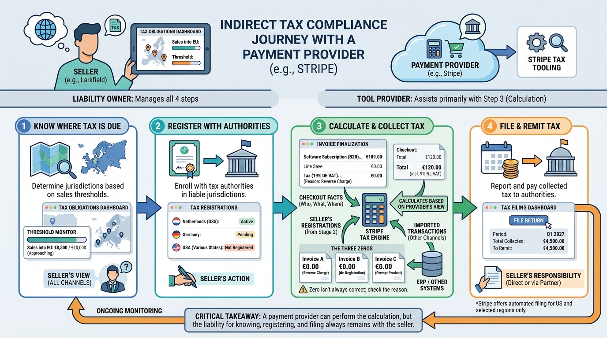

Part VI — REVENUE: Billing, Tax and Recognition
Whose Tax, at What Rate: Tax Calculation in the Payment Path
AI-assisted: researched and written with Claude Code; illustrations generated with Gemini. How this works

Image generated by Google Gemini (gemini-3-pro-image-preview)